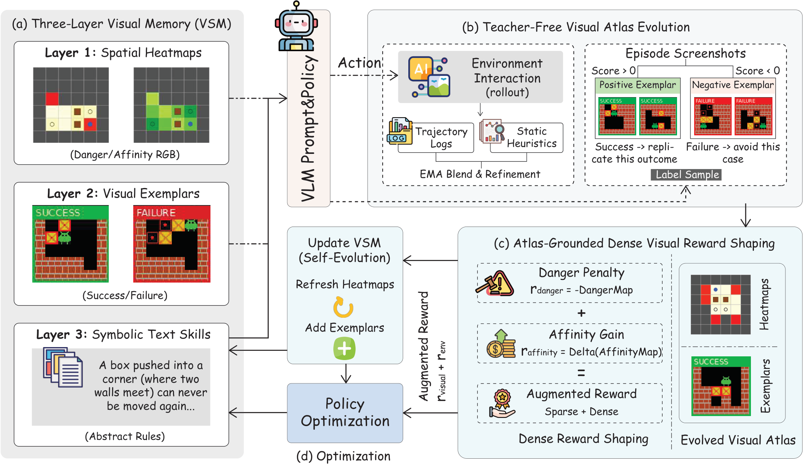
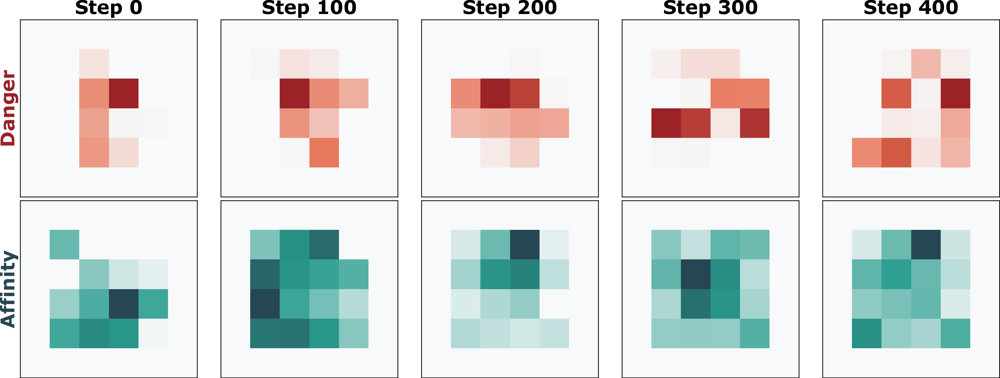
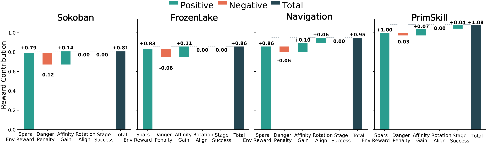

AtlasVA：面向无教师 VLM 智能体的自进化视觉技能记忆
AtlasVA: Self-Evolving Visual Skill Memory for Teacher-Free VLM Agents
①开源贡献 Open-source Artifacts
本文开源程度较高：代码、训练好的 3B 模型权重、项目主页均已公开核实可访问（许可证 MIT）。评测环境（Sokoban / FrozenLake / AI2-THOR / ManiSkill）均为公开第三方仿真器，论文在其上做封装与扩展；未见单独打包发布的“数据集”。下表链接均为解读日实际确认存在。
| 类型 | 是否开源 | 内容 / 链接 |
|---|---|---|
| 代码 Code | ✔ | github.com/wangpan-ustc/AtlasVA 含 atlasva/ 包（环境、agent 多轮交互、视觉记忆与奖励塑形模块）、内置 verl/ RL 后端、PPO/GRPO 训练入口（main_ppo.py）、四类环境训练脚本及 API 评测脚本。许可证 MIT（以 HF 卡片标注为准）。 |
| 模型权重 Weights | ✔ | huggingface.co/wangpan-ustc/AtlasVA 基于 Qwen2.5-VL-3B-Instruct 的训练权重，任务类型 image-text-to-text，许可证 MIT。 |
| 数据集 Dataset | ✘ | 未单独发布。记忆（热力图/范例/文本技能）在训练时由训练环境轨迹在线演化生成，验证集严格隔离；无静态训练数据包。 |
| 环境 / Benchmark | — 复用第三方 | Sokoban、FrozenLake（Gymnasium）、3D 导航（AI2-THOR / EmbodiedBench）、PrimitiveSkill（ManiSkill3，VAGEN 引入）。其中 Swap 任务为本文新增；封装与脚本随代码仓库一并提供。 |
| 项目主页 / Demo | ✔ | wangpan-ustc.github.io/AtlasvaWeb（含架构图、定性 rollout，无交互式 demo） |
②研究动机与贡献 Motivation & Contribution
背景与问题
VLM 正成为交互式智能体的通用接口：读指令、解析画面、在序列环境里执行有空间约束的动作（web 导航、GUI 控制、具身规划）。在长程空间任务里，智能体必须跨 episode 积累可复用经验，而不是每步从零推理。为此，近期一批“记忆增强 RL”系统（Reflexion、ExpeL、Mem0、A-Mem，以及技能库式的 SkillRL、XSkill）会把成功/失败轨迹总结成文本，检索相关条目，再靠一个强大的教师模型来不断精炼记忆。
这套配方对“纯语言智能体”合理，但对靠空间感知解题的 VLM 智能体严重水土不服。论文把痛点精确拆成三条（对应原文 Figure 1 上半部）：
- ① 模态失配 / 信息有损（Modality Mismatch）：把二维布局压成一维文本规则会丢弃几何结构——死胡同、局部陷阱、有希望的子目标区域这类空间拓扑很难用文字表达，等于把“视觉决策”退化成一道有损翻译题。
- ② 教师依赖（Teacher Dependency）：要维护这些文本记录，框架往往需要一个专有 LLM 去总结失败、合并技能、改写记忆。这既抬高算力 / API 成本，也破坏了“完全自主自我改进”的前提。
- ③ 稀疏文本奖励的反馈失配（Sparse Text Reward）：用“文本批评”（如“你不该把箱子推进角落”）来评估空间交互，本质抽象、滞后、缺乏精确坐标定位，无法提供稠密、坐标感知的指导，从而加剧 RL 的信用分配（credit assignment）难题。
本文的切入点
核心主张一句话：VLM 智能体可复用的经验，应当保持在「视觉模态」里。顺着这个 insight，三条痛点被一一对位破解：
- 对 ①：用三层视觉技能记忆（VSM）把经验存成空间热力图 + 视觉范例 + 符号文本，热力图作为视觉提示把复杂 3D 环境投影成 2.5D 空间图，让敏感的空间知识留在 VLM 的原生模态里。
- 对 ②：直接从原始交互历史自举（bootstrap）记忆——聚合轨迹统计来构造自进化热力图，不调用任何外部模型做文本总结。
- 对 ③：把同一批热力图在数学上形式化为势函数，奖励朝历史成功区域移动、惩罚已识别的死锁，从而提供稠密、坐标对齐的指导。
核心贡献
- 三层视觉技能记忆（VSM）：用「空间热力图 + 视觉范例 + 符号文本」的层级取代有损的纯文本存储，让可复用经验原生对齐智能体的视觉感知。
- 无教师图谱演化机制：直接从原始轨迹统计（终止失败位置→danger；成功路径访问频率→affinity）+ 静态网格启发式（角落陷阱、BFS 距离场）精炼 danger / affinity 热力图，彻底去掉对专有 LLM 的依赖。
- 稠密视觉奖励塑形：把演化中的视觉先验复用为势函数，提供稠密、坐标对齐的梯度，缓解 2D / 3D 任务里严重的稀疏奖励瓶颈，在学习效率与最终性能上都有显著提升（3B 模型平均成功率 0.93，反超 GPT-5 / o3）。
③方法 Method
AtlasVA 把问题建模成部分可观测马尔可夫决策过程 $\mathcal{M}=\langle\mathcal{S},\mathcal{O},\mathcal{A},\mathcal{T},\mathcal{R},\gamma\rangle$。每个时刻 $t$，智能体收到多模态观测 $o_t$（一张渲染的 RGB 帧 + 自然语言任务描述），从由 VLM 参数化的多模态策略 $\pi_\theta(a_t\mid o_{\le t})$ 中采样离散动作 $a_t$；环境只在任务成功时给出稀疏二值奖励 $R(s_t,a_t)\in\{0,1\}$。难点在于：最优策略需要深刻的空间推理和长程规划，反馈却极其稀疏滞后。
关键设计是一个 GridState 抽象 $g_t$：训练时直接从仿真器内部状态读取“特权信息”（障碍、可交互物体的语义层；主操作实体的二维坐标 $p_t\in\mathbb{Z}^2$），仅用于构造和演化空间先验。注意：部署 / 评测时 VLM 策略只吃原始视觉输入 + 渲染好的视觉记忆提示，绝不接收这些底层坐标，从而保证零样本比较的公平性。整体如下图：一个闭合的“感知—优化”回路（a 三层记忆 → b 无教师演化 → c 稠密视觉奖励 → d 策略优化 → 回到 a 刷新记忆）。

3.1 三层视觉技能记忆 VSM（Fig.2a）
给 VLM 的增广多模态提示构造为 $$\tilde o_t = [\,M_{\text{danger}},\; M_{\text{affinity}},\; E_{\text{vis}},\; S_{\text{text}},\; o_t\,].$$ 三层从“感知 → 实例 → 符号”构成完整的知识梯度：
- L1 空间热力图（Spatial Heatmaps）：在环境上铺连续空间场——danger map 标示死锁风险、affinity map 标示离任务完成的接近度。不写成文本数组，而是渲染成 RGB 热力图 $M\in\mathbb{R}^{H\times W\times3}$，天然对齐 VLM 的视觉编码器。注入方式是独立的视觉 token（实验发现直接 alpha 叠加到原图上会干扰 VLM 对小前景物体的识别）。
- L2 视觉范例（Visual Exemplars，$E_{\text{vis}}$）：从历史 rollout 中挖一小撮代表性截图，显式打上 success / failure 标签，给抽象空间先验配上具体视觉参照。
- L3 符号文本技能（$S_{\text{text}}$）：保留一组紧凑的文本启发式（通用原则 / 推箱策略 / 应避免的错误）。关键点：这些文本直接来自环境规则书与任务描述，不需要任何教师 LLM 生成或总结，从而保持“完全无教师”。
3.2 无教师视觉图谱演化（Fig.2b）
L1 的热力图由两支融合而成：静态网格启发式 $M_{\text{heuristic}}$ + 累积轨迹统计 $M_{\text{stat}}$。
轨迹累积。设 $\mathcal{T}_{\text{fail}}$、$\mathcal{T}_{\text{succ}}$ 为失败 / 成功轨迹集合。批次级 danger map 通过累积终止失败位置 $p_T$ 得到： $$M_{\text{batch}}^{\text{danger}}(p)=\frac{1}{|\mathcal{T}_{\text{fail}}|}\sum_{\tau\in\mathcal{T}_{\text{fail}}}\mathbb{I}(p_T=p).$$ 其中 $\mathbb{I}(\cdot)$ 是指示函数；该式统计“失败收场坐标”的归一化频次。affinity map 则记录成功路径上坐标的归一化访问频率。
EMA 融合。历史统计用指数滑动平均（衰减率 $\alpha=0.85$）更新：$M_{\text{stat}}\leftarrow\alpha M_{\text{stat}}+(1-\alpha)M_{\text{batch}}$。最终呈现给 VLM 的热力图是静态启发式与 EMA 统计的动态混合： $$M_{\text{final}}=(1-\beta_k)\,M_{\text{heuristic}}+\beta_k\,M_{\text{stat}},$$ 调度系数 $\beta_k\in[0,1]$ 随训练 epoch $k$ 从 0 退火到 1：早期靠静态几何提供安全的冷启动探索，后期平滑过渡到经验驱动的精炼，避免灾难性遗忘。$M_{\text{heuristic}}$ 由当前布局现算的拓扑特征构成（affinity 用到目标的 BFS 距离场；danger 用角落 / 贴墙 / 洞口邻域的衰减），所以即便面对训练中没见过的新布局，也能即时给出稠密空间梯度——这正是零样本泛化到新拓扑的来源。
3.3 图谱接地的稠密视觉奖励塑形（Fig.2c）
从 $p_t$ 到 $p_{t+1}$ 的转移，计算有界辅助视觉奖励 $r_{\text{visual}}=\lambda_{\text{danger}}\!\cdot\! r_{\text{danger}}+\lambda_{\text{affinity}}\!\cdot\! r_{\text{affinity}}$。
Danger 惩罚：对进入历史高危坐标施加正比于其 danger 值的负惩罚 $$r_{\text{danger}}=-\,M_{\text{final}}^{\text{danger}}(p_{t+1}).$$ Affinity 增益：取 affinity 势的逐步差分 $$r_{\text{affinity}}=M_{\text{final}}^{\text{affinity}}(p_{t+1})-M_{\text{final}}^{\text{affinity}}(p_{t}).$$ 由于 $M_{\text{final}}^{\text{affinity}}$ 继承了 BFS 距离梯度，只要智能体朝目标走近一步就得到严格正信号，走远则严格负——把单一的终端稀疏奖励，变成每一步都有的稠密优化地形。
3.4 优化与闭环（Fig.2d）
用于 RL 的最终奖励为 $r_{\text{visual}}+r_{\text{env}}$。更形式化地（附录 A），塑形项为 $$F(o_t,a_t,o_{t+1})=\big[\Phi_{\text{affinity}}(o_{t+1})-\Phi_{\text{affinity}}(o_t)\big]-\beta\cdot\mathbb{I}(\text{enters\_danger}(o_{t+1})),$$ 其中 affinity 支按势函数差分（potential-based reward shaping，Ng et al. 1999），理论上保证不改变最优策略；而 danger 支被有意设计成「非势函数」的启发式安全约束——它刻意重塑最优策略，让智能体宁可绕远也要避开危险捷径。EMA 演化把整个系统变成一个自举循环：策略变强 → 轨迹质量更高 → 经 EMA 更精确地更新 $M$ → 提供更准的势函数 $\Phi$ 和增广观测 $\tilde o_t$ → 进一步优化策略。视觉范例的更新用冻结的 DINOv2 余弦相似度匹配关键拐点帧 + FIFO 淘汰（选 DINOv2 而非 CLIP，因其自监督目标给出更好的 patch 级空间对应，利于 Sokoban 这类二维拓扑匹配）。

- 基座 / 优化：Qwen2.5-VL-3B-Instruct，PPO + GAE，actor lr $1\times10^{-6}$、critic lr $1\times10^{-5}$，rollout batch 128、mini-batch 32，KL 系数 0.0；8× RTX 6000 Ada，vLLM 异步 rollout，prompt 长 5000–8000、response 4000。
- 记忆超参（全环境统一）：EMA $\alpha=0.85$；渲染 cell 40px；范例池正/负各 3、最多注入 4 个、DINOv2 余弦检索；文本技能 Top-K 注入 3（grid）/4（Swap），每 10 次更新剪枝一次。
- 热力图渲染：严格线性 colormap——danger 映射到纯红 (R=255,G=0,B=0)、affinity 映射到纯绿 (R=0,G=255,B=0)，用 alpha 通道编码强度；作为独立
<image>token 注入而非叠图。 - 奖励系数随任务调：纯网格任务（Sokoban/FrozenLake）$\lambda_{\text{danger}}=\lambda_{\text{affinity}}=0.05$；导航 0.1；高精度长程操作 PrimitiveSkill 用更强引导 0.3。成功 +1.0，失败/超时 −0.1，格式错误 −0.5。
- 3D→2.5D 投影：导航把可达面投到 X-Z 平面、按 0.25m/格离散成 2D 平面图；机械臂把操作台映成局部 2.5D 网格、Z 轴高度作为任务元数据隐式保留。3D 连续坐标实时反查 2.5D 热力图取势。
④实验评估 Evaluation
评测设置
- Benchmark（4 类、覆盖 2D→3D）： Sokoban（推箱子，考验不可逆死锁规避与几何规划）、FrozenLake（冰湖避洞导航，Gymnasium）、3D Navigation（AI2-THOR 具身导航，含 Base / Common 子集）、PrimitiveSkill（ManiSkill3 多轮机械臂操作，含 Place / Stack / Drawer / Align 及本文新增的 Swap——要求交换两个方块位置）。
- 对比基线：专有模型 GPT-5、o3、o4-mini、GPT-4o、Gemini 2.5 Flash/Pro、Gemini 2.0、Claude Sonnet 4.5/3.7；开源模型 Qwen2.5-VL-72B/7B/3B、VLM-R1-3B；以及最强 RL 基线 VAGEN。AtlasVA 自身基座只有 3B。
- 指标：成功率 Success Rate（0–1，越高越好），及 Overall 平均。零样本评测：记忆只在训练环境演化，验证集严格隔离。
主要结果
下表节选原文 Table 2 的核心列（Navigation 取 Average，PrimitiveSkill 取五项均值）。AtlasVA 在每个基准上都拿到当列最佳：
| 方法 | Sokoban | FrozenLake | Navigation(Avg) | PrimitiveSkill(均) | Overall |
|---|---|---|---|---|---|
| GPT-5 | 0.70 | 0.77 | 0.78 | 0.64 | 0.69 |
| o3 | 0.60 | 0.78 | 0.78 | 0.69 | 0.71 |
| Claude Sonnet 4.5 | 0.31 | 0.80 | 0.67 | 0.63 | 0.62 |
| Qwen2.5-VL-72B | 0.18 | 0.44 | 0.73 | 0.57 | 0.55 |
| Qwen2.5-VL-3B（基座，0-shot） | 0.14 | 0.14 | 0.24 | 0.00 | 0.09 |
| VAGEN（最强开源 RL 基线） | 0.61 | 0.71 | 0.79 | 0.83 | 0.78 |
| AtlasVA（本文，3B） | 0.79 | 0.83 | 0.86 | 1.00 | 0.93 |
几点解读：
- 小模型反超大模型（RQ1）：3B 的 AtlasVA Overall 0.93，显著高于 GPT-5（0.69）、o3（0.71）和 VAGEN（0.78）。在 Sokoban 上从基座的 0.14 拉到 0.79，超过 GPT-5 的 0.70——空间任务上参数量不是决定因素，是否有原生空间记忆才是。
- 3D 操作几乎打满：PrimitiveSkill 五个子任务（Place/Stack/Drawer/Align/Swap）全部 1.00。对比之下，新增的 Swap 任务上 Qwen2.5-VL-72B 仅 0.33、GPT-5 仅 0.55——长程精确操作正是大模型“空间盲”的重灾区，而对比性视觉范例有效正则化了策略、阻止重蹈历史失败。
- 收敛更快（RQ2）：纯文本（仅 L3）的基线在 Sokoban 上很难超过 0.25 成功率；AtlasVA 约 140 步就爬到 ~0.80。PrimitiveSkill 上 AtlasVA 快速收敛到满分，文本基线只在 ~0.60 处停滞（原文 Figure 4）。

消融 / 分析
原文 Figure 5 做了五项诊断式消融，逐一回应 RQ：
- w/o VSM：移除整套视觉层级，在 Sokoban / FrozenLake 上性能急剧下降——证明把几何约束压成文本会造成致命信息损失，原生视觉接地确有必要（RQ4）。
- w/o Heatmap (L1) / w/o Exemplar (L2)：去掉拓扑图或情节检索任一层都掉点，说明两层缺一不可。
- w/o Atlas Evolution：关掉离线 off-policy 更新（退化为静态规则）导致全任务大幅退化——反证“热力图能纯靠原始统计自举、无需教师 LLM”（RQ3）。
- w/o Dense Reward：只用稀疏反馈会困在长程任务的局部最优，确认稠密塑形对缓解稀疏奖励瓶颈、加速收敛是必需的（RQ2）。
其它分析：热力图从 Step 0 的空白到 Step 200 已能显式标出结构性死角与可达子目标路径（Figure 6，即上图 2）；视觉范例池上限 6，在前 40 步即填满，并与验证成功率从近 0 跃升到 70%+ 同步发生（Figure 7），随后持续以新观测淘汰旧帧（Figure 8）；逐步奖励曲线（Figure 11）显示 danger 惩罚在临近死角时立即给出纠偏信号、affinity 增益沿有效路径持续给正反馈。
⑤洞见 Insights
- 「记忆应保持在感知的原生模态里」是核心方法论。把空间经验存成 RGB 热力图，而不是文字规则，等于让 VLM 用预训练好的视觉编码器去做“零样本空间模式匹配”，绕开了“2D→文本→2D”的有损翻译。这一思路可迁移到任何感知主导的智能体记忆设计。
- 同一份视觉先验可以「一物三用」。热力图既是 (a) 注入策略的视觉提示、又是 (b) 自进化的记忆载体、还是 (c) 奖励塑形的势函数——感知、记忆、优化被统一在一个可微的空间场上，省去了三套独立机制和外部教师。
- 统计 + 启发式的「无教师」自举，足以替代专有 LLM 的总结/精炼。“失败终点→danger、成功路径→affinity、BFS/角落→静态先验”这套极简非参数提取，配 EMA 退火调度，就能演化出有意义的拓扑图——把自我改进的成本从“反复调用 GPT-4”降到几乎为零。
局限与未来
- 2.5D 投影是主要边界：作者自陈，把桌面 3D 操作投影成 2.5D 视觉先验是核心限制；推广到高度遮挡、第一人称的 3D 机器人场景仍是关键未解问题（X-Z 投影 + Z 轴当元数据的简化在强遮挡下会失效）。
- 依赖仿真器特权状态：danger/affinity 的演化依赖训练时从仿真器读取的精确坐标（GridState）。虽然评测时策略不接触这些信息，但在真实机器人上缺乏这种 ground-truth 坐标，迁移需要可靠的位姿估计。
- danger 支非势函数：它刻意改变最优策略以偏好安全——好处是避险，潜在代价是可能放弃某些最优但“危险”的捷径，需按任务权衡 $\lambda$。
- 规模与任务多样性：实验集中在网格 / 桌面 / 室内导航；更开放、动态、像素级输入更复杂的环境（如真实 web / 户外）尚未验证。
与相关工作的关系
相对 Reflexion / ExpeL / Mem0 / A-Mem 这类把轨迹蒸馏成语言记录的记忆框架，以及 SkillRL / XSkill 这类构建自然语言 / Markdown 技能库的方法，AtlasVA 的根本区别是把在线适应整体搬到视觉图谱，并去掉教师依赖（即便号称视觉接地的 XSkill 仍以 Markdown/JSON 存经验，难以刻画细粒度空间陷阱）。在奖励侧，相对“用外部 LLM 生成文本奖励”（Text2Reward、RL-VLM-F 等）和需要大量手工设计势函数的经典 PBRS（Ng et al. 1999），AtlasVA 让自进化视觉图谱充当自动学习的势函数，把网格线索与轨迹统计转成稠密坐标对齐奖励，既自动化了奖励工程，又保留逐步空间梯度；也避免了 count-based 探索奖励难以直接扩展到像素级输入的问题。基座与环境上，本文延续 VAGEN 的多轮 VLM RL 设定（PrimitiveSkill 即由 VAGEN 引入），并在其上以更小的 3B 模型显著超越之。